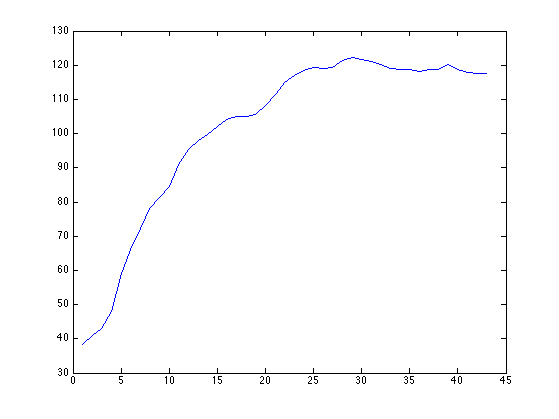

MATLAB Tutorial 4 - Mathieu ZARADZKI
Lets try again important questions from Tutorial 3
Contents
QUESTION 1 - Tracking the index
NOTE: This was question #6 in the previous tutorial.
Select 5 US stocks and foom a matrix of their logreturns.
Try different (random) weights to find a long only portfolio that tracks
the best the SPX index.
TIP: You are encourage to re-use and modify the "getstockdata" and "greeksoup"
functions from the 2nd tutorial
IBMdata = getstockdata('IBM');
JPMdata = getstockdata('JPM');
WMTdata = getstockdata('WMT');
MMMdata = getstockdata('MMM');
XOMdata = getstockdata('XOM');
SPXdata = getstockdata('Index_SPX500');
stockmatrix = [IBMdata.logreturns, JPMdata.logreturns, WMTdata.logreturns, MMMdata.logreturns, XOMdata.logreturns];
NbSims = 10000;
BESTCORRELATION = -2;
for i = 1 : NbSims
weights = rand(5,1);
weights = weights / sum(weights);
PTFLlogreturns = stockmatrix * weights;
correlation = corr(PTFLlogreturns, SPXdata.logreturns);
if (correlation > BESTCORRELATION)
i
BESTCORRELATION = correlation
BESTWEIGTHS = weights;
end
end
i =
1
BESTCORRELATION =
0.9266
i =
4
BESTCORRELATION =
0.9379
i =
42
BESTCORRELATION =
0.9407
i =
48
BESTCORRELATION =
0.9408
i =
190
BESTCORRELATION =
0.9410
i =
1099
BESTCORRELATION =
0.9410
i =
1108
BESTCORRELATION =
0.9421
i =
5561
BESTCORRELATION =
0.9422
i =
5650
BESTCORRELATION =
0.9423
QUESTION 2 - Portfolio algebra (ask help with the math if necessary)
NOTE: This was question #8 in the previous tutorial.
Lets assume that:
a) for 5 different stocks the previous "Alpha and Beta" equation holds, and that
b) for two different stocks the Epsilon' are independant from each other.
Can you use the different Beta' and Sigma' to build a "model" covariance matrix?
betas = nan(5,1);
alphas = nan(5,1);
sigmas = nan(5,1);
for i=1:5
covmatrix = cov(stockmatrix(:,i), SPXdata.logreturns);
betas(i) = covmatrix(2,1) / covmatrix(2,2);
alphas(i) = mean(stockmatrix(:,i) - betas(i) * SPXdata.logreturns);
epsilons = stockmatrix(:,i) - betas(i) * SPXdata.logreturns - alphas(i);
sigmas(i) = std(epsilons);
end
capmcovmat = (betas * betas') * var(SPXdata.logreturns) + diag(sigmas.^2)
realcovmat = cov(stockmatrix)
capmcovmat =
1.0e-03 *
0.1850 0.1980 0.0668 0.1052 0.1189
0.1980 0.7394 0.1419 0.2235 0.2528
0.0668 0.1419 0.1494 0.0754 0.0852
0.1052 0.2235 0.0754 0.2081 0.1343
0.1189 0.2528 0.0852 0.1343 0.2545
realcovmat =
1.0e-03 *
0.1850 0.1902 0.0685 0.1054 0.1114
0.1902 0.7394 0.1250 0.2095 0.2001
0.0685 0.1250 0.1494 0.0768 0.0808
0.1054 0.2095 0.0768 0.2081 0.1336
0.1114 0.2001 0.0808 0.1336 0.2545
QUESTION 3 - Working as a Quant Analyst
NOTE: This is an *extension* of question #9 in the previous tutorial.
In the case of a 3 stocks portfolio allocation, can you optimize the
weights using a function maximization of the Sharpe ratio?
Remember that visually you could only optimize between 2 stocks.
TIP: you can use "fminsearch" function
TIP: if you have 3 stocks you only have 2 variables as their sum is 100%
QUESTION 4 - Boosting your Matlab with a Data API
Computing is about standing between Input and Output.
So without any Input it gets really dull.
Save the +Quandl folder from this page with your other Matlab files and
test the following line "data = Quandl.get('NSE/OIL');"
LINK: https://github.com/quandl/MatlabQuandl.auth('8aVZ3CksqJmfEozdFNbB');
JPNCPI = Quandl.get('FRED/JPNCPIBLS');
plot(JPNCPI.data);

QUESTION 5 - Checking the statistics tables are correct
No need to do a difficult math to check if the statisticians who built
the t-distribution and the chi-square-distribution are correct.
Consider a ChiSquare with 2 components.
Simulate its random output by using is definition as Chi2: X1^2 + X2^2
where X1 and X2 are Normal random variables.
Using 10000 simulations (please don't print on the screen) compute the
90-percentile of your simpulated sample and compare with critial values
from the tables.
X1 = randn(10000, 1);
X2 = randn(10000, 1);
CHI2SIMS = X1.^2 + X2.^2;
prctile(CHI2SIMS, 90)
chi2inv(0.90, 2)
ans =
4.6428
ans =
4.6052
QUESTION 6 - Writing a function from #5
The calculations you did for question #5 are usefull so lets turn this
into a function so that:
a) the user can specify the number of components
b) the user get the list of 5, 10, 15, ..., 90, 95 percentiles as ouputNbChi2Comp = 5;
CHI2SIMS = zeros(10000, 1);
for i = 1 : NbChi2Comp
Xs = randn(10000, 1);
CHI2SIMS = CHI2SIMS + Xs.^2;
end
prctile(CHI2SIMS, 90)
chi2inv(0.90, NbChi2Comp)
ans =
9.2830
ans =
9.2364
QUESTION 7 - What about Jarque Berra accuracy? (DIFFICULT)
In reality the Jarque Bera test (jbtest in Matlab) we have studied is an
approximation.
In reallity the JB statistics is not a Chi Square.
Can you use random simulations and the jbtest function to get a sample
of the JBstat distribution.
You are free to use a loop.
Then compare with QQplot the jbtest with the ChiSquare distribution.